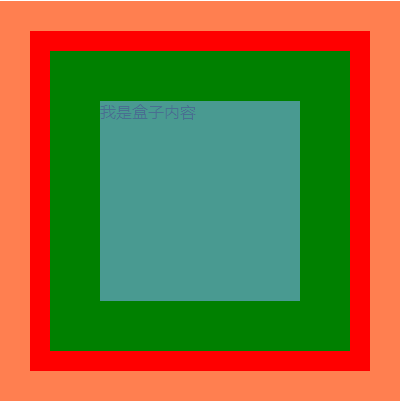

浏览器是如何工作的?
我们在浏览器上输入网址，通过DNS解析成IP地址连接上我们前端服务器，
然后开始下载我们前段代码到本地，且是下载一行执行一行，遇到引入外部文件例如js代码，css代码
会再开一个线程同时下载其代码，这也就是说为什么要等到dom文档加载完成以后，js才能操作dom文档
与此同时浏览器解析html，加载css，js代码就会呈现我们所访问的网站，这就是浏览器的访问网页的原理
前端服务器的工作就是提供代码，发送其副本到各个客户端浏览器，所以你本地调试模式下修改网页，也只是
改变了本地的代码，本地网页的样式。
异步加载：多线程并联，同时工作，与生活中的同步工作是一样的
同步加载：单线程串联，干完这一件才能干下一件，与生活中的同步工作正好相反
选择器
- id选择器（#），一对一，全局唯一，一个标签只有一个id且id值是惟一的
- class类选择器（.），多对多，一个标签可以有多个class值，一个class值也可以加载多个标签上
- 标签选择器（标签名），选择的是所有的标签
- 通配符选择器（*），选中所有的标签包括HTML，body。。。凡是标签都被选择
选择器优先级说明：简单的区别就是越是唯一，优先级权限越高，重点--权重值的计算方式是256进制，不是10进制
- ！important 级别最高，权重值：Infinity正无穷，正无穷+1就是比正无穷大
- 行间样式，级别次之，权重值：1000
- id选择器，级别次之，权重值：100
- class|属性|伪类选择器，级别次之，权重：10
- 标签|伪类选择器，级别次之，权重：1
- 通配符选择器，级别次之，权重：0
其他选择器，组合选择器，复杂选择器
<div class="father">
<p><strong><em>1</em></strong></p>
<strong id="str"><em>2</em></strong>
</div>
- 父子选择器：无论用标签选择器还是class类选择器，都能表示父子关系div p strong{}==.father p strong{}; 浏览器遍历父子关系都是从右向左查找的，效率高
无论是父子爷孙都可以是父子选择关系div strong em{}==div em{}==strong em{}
- 直接子元素选择器：div > strong{} == #str{} != div strong{}
<div>1</div>
<div class="demo">2</div>
<p class="demo">3</p>
这样的结构就需要并列选择器才能选出来惟一的结果，CSS代码如下：
div.demo{}
- 并列选择器,中间没有空格表示条件并列，可以无数个条件并列
- 分组选择器，中间用逗号隔开，表示共用一个样式
有关复杂选择优先级的权重计算
<div class="class-div" id="id-div">
<p class="class-p" id="id-p">1</p>
</div>
下边两种选择方式改变 <p></p>标签的背景色权重计算结果
#id-div p{ } ==>权重计算 100+1=101
div.class-p{ } ==>权重计算 1+10=11
div .class-p{ } ==>权重计算 1+10=11
.class-p#id-p{} ==>权重计算 10+100=110
以上可以看出无论怎么组合 怎样的层级关系 权重的计算方式都是权重分数相加得到的结果越大，权重越高优先级越高
权重相等的使用最后一个
下边正式开始CSS属性的详解
字体相关
标签元素边框属性border的用法
-
基本用法如下：
#resultsShowDivId #showBorderDivId-a{
width: 100px;/*这里的宽高指的是该div的宽高*/
height: 100px;/**/
border: 2px solid black;/*边框的粗细，样式，颜色*/
margin-top: 5px;/*该div的上外边距*/
margin-bottom: 10px;/*该div的下外边距*/
}
-
通过把div的宽高设成零只剩边框，就是一个正方形
#resultsShowDivId #showBorderDivId-b{
width: 0px;/**/
height: 0px;/**/
border: 60px solid black;/*边框样式取值自行百度，有实线，虚线，点线*/
margin-top: 5px;/**/
margin-bottom: 10px;/**/
}
-
先把div的宽高改变让其div变成长方形
通过拆解border的属性把上下左右的颜色改变，或宽度改变
最后就变成如下图形的div
#resultsShowDivId #showBorderDivId-c{
width: 180px;/**/
height: 80px;/**/
border-width: 10px;/*把上边的拆解写法边框宽度*/
border-style: solid;/*边框样式*/
border-color: black;/*边框颜色*/
border-top-color: red;/*上边框颜色*/
border-right-color: darkblue;/*右*/
border-bottom-color: green;/*下*/
border-left-color: coral;/*左*/
border-right-width: 40px;/*右边框加框*/
border-bottom-width: 30px;/*下边框加框*/
margin-top: 5px;/**/
margin-bottom: 10px;/**/
}
-
把div设置成正方形就中间那一小块白色的，其他就是边框
#resultsShowDivId #showBorderDivId-d{
width: 30px;/**/
height: 30px;/**/
border: 30px solid black;/**/
border-top-color: red;/**/
border-right-color: darkblue;/**/
border-bottom-color: green;/**/
border-left-color: coral;/**/
margin-top: 5px;/**/
margin-bottom: 10px;/**/
}
-
如果div大小为0，那都是边框，
边框跟边框的的交界会跟随越靠近中心越小，就形成了三角形
每个颜色就带边一个边框
#resultsShowDivId #showBorderDivId-e{
width: 0px;
height: 0px;
border: 60px solid black;
border-top-color: red;
border-right-color: darkblue;
border-bottom-color: green;
border-left-color: coral;
margin-top: 5px;
margin-bottom: 10px;
}
-
如果把其他边框颜色设置为透明色，剩下一个边框，那就是纯正的三角形
边框就简单这些，其他的可以根据属性自由组合
#resultsShowDivId #showBorderDivId-f{
width: 0px;
height: 0px;
border: 60px solid black;
border-top-color: transparent;/*透明色，背景是什么色就是什么色*/
border-right-color: transparent;
border-bottom-color: transparent;
border-left-color: darkred;
margin-top: 5px;
margin-bottom: 10px;
}
文本相关
有相当的旅游项目是具有很强的专业性和知识性的，一般人是不胜任的，只配拍照发朋友圈。没有历史知识、地理常识，没有一点天文、地质、动植物知识，你去“旅游”干嘛？就像一般可以听流行曲、轻音乐，但绝大部分人是不懂欣赏交响乐的。
#textLine .span-a{
text-decoration: overline;/*给文字加上划线*/
}
#textLine .span-b{
text-decoration: line-through;/*给文字加上删除线*/
}
#textLine .del-b{
text-decoration: none;/*给文字去掉删除线*/
}
#textLine .span-c{
color:rgb(0,0,238);/*模拟a>标签的颜色*/
text-decoration: underline;/*给文字加下划线*/
cursor: pointer;/*模拟a>标签的鼠标一上去的图标，改变鼠标一上去的样式*/
}
span-a原价50元
span-b原价50元
del-a原价50元
del-b原价50元
www.aiguibin.com
www.aiguibin.com
伪类选择器与属性选择器综合运用
元素简单分类
-
行级元素 inline
- 内容决定元素所占的位置
- 不可以通过CSS直接改变宽高
- 主要有：span,strong,em,a,del
-
块级元素 block
- 依据元素宽高独占一行
- 可以通过CSS直接改变宽高
- 主要有：div,p,ul,ol,li,form,address
-
行级块元素 inline-block
- 内容决定元素所占的位置
- 可以通过CSS直接改变宽高
- 主要有：img
/*总结他们能如此优秀，主要是因为他们默认的属性如下*/
span{
display: inline;
}
div{
display: block;
}
img{
display: inline-block;
}
关于图片并排之间有空隙的原理
产生的原因主要是：凡是带有inline属性的元素都有文字的特性，换行都会有空格
解决方案就是把带有inline属性的元素代码的换行去掉，如下写法
正确的做法：写成一行
错误的做法
.image{
border: 0;
width: 300px;
margin-left: -4px;
}
原因在于：我们这样写开发环境下是没有错的，但是代码打包压缩的时候，系统本来就是要把无用的换行去掉，到生产环境图片就会丢失6px
关于盒子模型
- 这是由两个div嵌套出来的图形，相对于#heMoXing这个div来说整幅图就是他的内容区域
- 再看.hezi这个地来说，他的组成是由蓝色的内容区域，加上绿色的padding，加上红色的border组成
- 剩下的部分就是.hezi这个div的边框的外边框距其他元素的内容区域，我们称为外边距margin
- 所以由里向外说明：
- 蓝色为内容类名为.hezi的div标签间嵌套的的内容
- 绿色为类名为.hezi的div标签的内边距padding，内边框距内容的距离
- 红色为类名为.hezi的div标签的边框border，内边框距外边框的距离
- 肉色为类名为.hezi的div标签的外边距margin，外边框距其他元素内容的距离
- 无论是margin还是padding尤甚更多的四个方向的属性有个特点就是：margin举例
- margin：10px；代表上下左右都是10px
- margin：10px 20px；代表上下都是10px，左右20px
- margin：10px 20px 30px；代表上是10px，左右20px，下是30px
- margin：10px 10px 20px 20px；代表上是10px，右10px，下是20px 左是20px，遵循顺时针上右下左的顺序赋值
